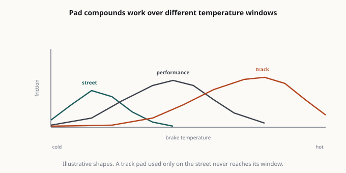
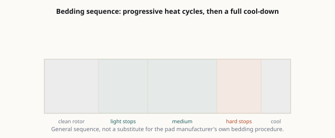

Brake Pads and Rotors: The Upgrade That Actually Makes You Faster
Every horsepower you add converts into lap time or road speed only if the car can stop and turn. Brakes are the most under-modified system on modified cars — people spend thousands on exhaust and skip the pads.
Every horsepower you add converts into lap time or road speed only if the car can stop and turn. Brakes are the most under-modified system on modified cars — people spend thousands on exhaust and skip the pads.

How a brake actually works
A hydraulic system multiplies pedal force and pushes a piston, which presses a friction material against a rotating disc. Stopping power comes from three things:
- Clamping force — determined by piston area, master cylinder, and pedal ratio.
- Friction coefficient — determined by pad compound and temperature.
- Mechanical advantage — determined by rotor diameter and the tire’s grip.
Notice the fourth factor that isn’t on the brake system at all: the tire. The best brake kit in the world is limited by the contact patch. This is why brake upgrades after tire upgrades, not before.

Pad compounds: the real decision
Pads are where almost all the felt difference lives, and the compound family matters more than the brand.
Organic / NAO (non-asbestos organic). Quiet, low dust, gentle on rotors, and fades early when hot. Fine for a light car driven gently. Not for performance use.
Semi-metallic. Good bite from cold, strong initial response, cheap. Dusty, noisy when cold, and harder on rotors. The default “performance” pad for a budget build, and genuinely good for a street car that sees spirited driving.
Ceramic. Quiet, very low dust, long life, stable at moderate temperatures. Lower initial bite than semi-metallic, and they can fade at genuine track temperatures. Ceramic is often sold as an “upgrade” when it’s actually a comfort choice — it’s great for a daily driver and wrong for a track day.
Full race / sintered. Extremely high friction at temperature, very poor cold bite, loud, brutal on rotors, and often not street legal. Designed for a race car that’s warm every lap. Do not put these on a street car “for safety” — poor cold bite is the opposite of safe.
The key number: operating temperature. Every pad has a temperature window. A street pad works from cold but fades around 600–800°F. A track pad needs 200–400°F to work at all and is happy at 1,200°F+. Mismatching the pad to the use is the single most common brake mistake:
- Track pad on the street = no brakes when cold, which is most of the time.
- Street pad on the track = fade after two laps, sometimes with the pedal going to the floor.
Rotors
Blank (smooth) rotors are the best choice for almost everyone. More mass, more heat capacity, no stress risers.
Slotted rotors continuously refresh the pad surface and clear debris and gas. Slight pad wear increase. Genuine benefit in heavy use.
Drilled rotors look good and are worse in every functional way: less mass, stress risers at the holes that promote cracking under thermal cycling. Avoid for track use. This is the most common cosmetic mistake in brake buying.
Two-piece rotors (aluminum hat, iron ring) reduce unsprung and rotating mass and allow cheaper ring replacement. Expensive up front, cheaper long term for a tracked car.
Directional vanes: check that internal vanes are oriented correctly for the side of the car. Many cheap rotors are not handed and cool worse.
Fluid and lines — the cheap upgrade people forget
Brake fluid is hygroscopic — it absorbs water over time, which lowers its boiling point. Wet boiling point is what matters, and old fluid boils far earlier than the label suggests. A fluid change every 2 years on a street car, and before every track event, is the cheapest brake upgrade that exists.
DOT 4 has a higher boiling point than DOT 3. DOT 5.1 is higher still and compatible with DOT 3/4 systems. DOT 5 (silicone) is not compatible with DOT 3/4/5.1 systems and must not be mixed.
Stainless braided lines improve pedal feel by reducing compliance in the rubber hoses when hot. Modest but real benefit; also a safety upgrade on an old car where rubber lines may be degrading. Check legality — some jurisdictions require specific certification.
Bedding
New pads must be bedded to transfer a layer of friction material onto the rotor. Skip this and you get vibration and reduced performance. The general procedure: a series of moderate stops from moderate speed, then a series of harder stops, then a cooling period without holding the brakes at a stop. Follow the pad manufacturer’s specific procedure — they differ.
Never hold a hot brake pedal at a standstill. That welds pad material onto one spot of the rotor and creates the judder people blame on “warped rotors” — which is almost never actual warping.
The honest summary
- Daily driver: good semi-metallic or ceramic pads (choose by dust preference), blank rotors, fresh DOT 4 fluid every two years. That’s it.
- Spirited street and occasional track day: track-capable street pads, blank or slotted rotors, high-temp fluid, stainless lines, and a dedicated set of track pads if you go often.
- Track: dedicated track pads swapped at the event, high-temp fluid, proper cooling ducts. Swap back before driving home.
- Always: tires first. Then brakes. Then power.